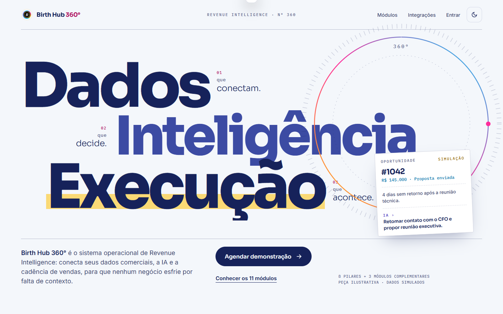
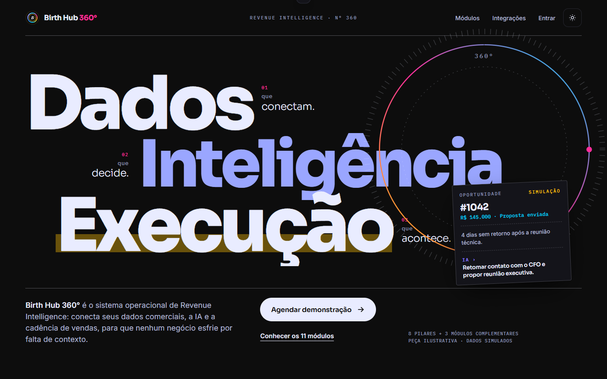
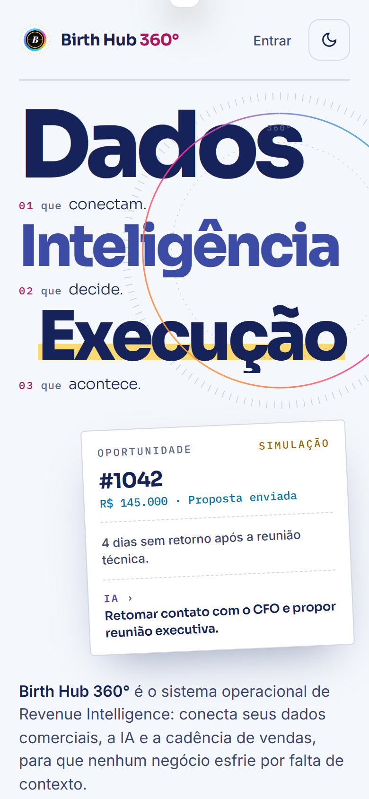
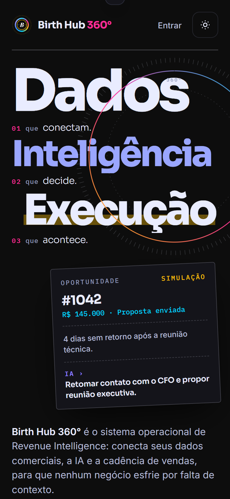

B original × B V2 — Editorial Future Refined
Mesmas condições de captura: desktop 1440 × 900 e mobile 390 × 844, estado final sem animação. No mobile, repare na posição do CTA.
Desktop · Light


Desktop · Dark


Mobile · Light e Dark (primeira tela)


